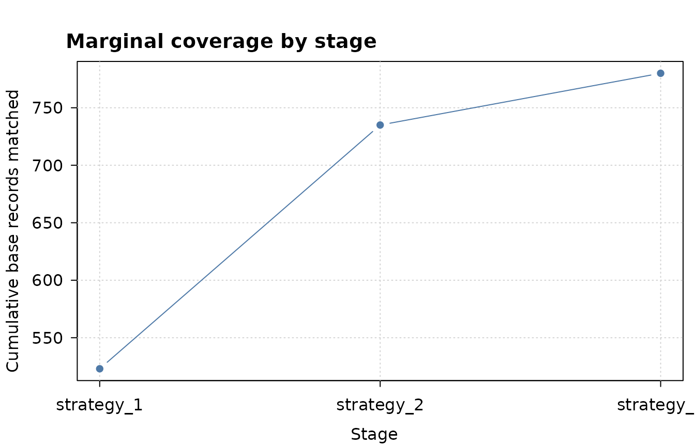

The Getting Started guide used one tool: a
search_strategy() that scores every candidate pair by how
much rare token mass the two records share. That fuzzy score is
forgiving, which is what you want for typos and reorderings, but
forgiveness costs precision and compute. Two things round it out:
- an exact strategy that matches by token-set identity or containment. It is cheap and certain, and it handles the common case where one side simply appends extra words.
-
staging, where you run several strategies in order
with
multi_stage_search(): a strict, cheap pass first, then looser passes that only see what the earlier passes left behind.
This article builds both on the workshop_register /
workshop_listings pair. Every feature has a planted tier in
the data, so switching it on produces a number you can read off the
page.
library(joinery)
library(dplyr)
#>
#> Attaching package: 'dplyr'
#> The following objects are masked from 'package:stats':
#>
#> filter, lag
#> The following objects are masked from 'package:base':
#>
#> intersect, setdiff, setequal, unionThe data
workshop_register is the clean base table: 1,052 entries
from a fictional Guild of Master Craftsmen roll.
workshop_listings is the messier directory side: 894
listings, 779 of which refer to a known register entry (the
actual_link column). The matchable columns share names
across both tables, so one strategy formula serves both sides. Block on
(postcode_area, trade).
glimpse(workshop_register)
#> Rows: 1,052
#> Columns: 15
#> $ reg_no <chr> "GMC-00001", "GMC-00002", "GMC-00003", "GMC-00004", "GMC…
#> $ workshop <chr> "Holloway Boat Builders Ltd", "Brocklehurst & Sons Partn…
#> $ proprietor <chr> "Arthur Holloway", "Geoffrey Brocklehurst", "Ian Thwaite…
#> $ trade <chr> "Boat Builder", "Cabinet Maker", "Boat Builder", "Shopfi…
#> $ legal_form <chr> "Ltd", "Partnership", "Sole Trader", "LLP", "Partnership…
#> $ postcode_area <chr> "LS", "LN", "NR", "DT", "HR", "CA", "LN", "SA", "DE", "B…
#> $ town <chr> "Leeds", "Lincoln", "Norwich", "Dorchester", "Hereford",…
#> $ address <chr> "9 Carpenter's Walk", "155 High Street", "104 High Stree…
#> $ established <int> 1985, 1999, 1973, 1978, 2002, 1984, 1988, 2007, 1990, 20…
#> $ employees <dbl> 15, 13, 1, 5, 6, 9, 9, 19, 4, 6, 6, 14, 5, 1, 13, 11, 4,…
#> $ apprentices <dbl> 0, 1, 1, 0, 0, 1, 0, 0, 0, 1, 0, 1, 2, 0, 1, 0, 0, 1, 0,…
#> $ guild_member <lgl> TRUE, TRUE, TRUE, TRUE, FALSE, TRUE, TRUE, FALSE, TRUE, …
#> $ sic <chr> "30120", "31090", "30120", "43320", "30120", "16230", "4…
#> $ true_entity <chr> "GMC-00001", "GMC-00002", "GMC-00003", "GMC-00004", "GMC…
#> $ gen_tier <chr> "core", "core", "core", "core", "core", "core", "core", …The listings come in labelled tiers (gen_tier), each
exercising one challenge:
| Tier | n | Challenge |
|---|---|---|
clean |
278 | Minimal distortion. |
slogan |
132 | Directory appends a marketing slogan after the name. |
variant |
103 | Abbreviations, punctuation, word reorderings. |
mover |
61 | Workshop relocated; listing is in a different
postcode_area. |
phonetic |
38 | Name spelled by ear (Pennell / Penell). |
hub_member / hub_trap
|
42 | A shared venue name baits over-linking. |
category_trap |
8 | A bare generic trade name, another over-linking bait. |
homonym_* |
134 | Different workshops with similar names. |
new |
98 | No match in the register. |
The trap and homonym tiers carry no actual_link (there
is nothing correct for them to match); they are here to test precision,
and we return to them at the end.
One way to measure
Every verb in this article returns the same thing: an entity table,
one row per record, with an entity id that groups records
the matcher believes are the same workshop. A listing is
recovered when it lands in the same entity as the
register row named in its actual_link. That one rule scores
every strategy below, so we write it once.
entity_recall <- function(ms, tiers = c("clean", "slogan", "variant", "mover", "phonetic")) {
ent <- ms |> select(id, entity)
truth <- workshop_listings |>
filter(!is.na(actual_link)) |>
select(listing_id, actual_link, gen_tier)
truth |>
left_join(ent, by = c("listing_id" = "id")) |>
left_join(ent, by = c("actual_link" = "id"), suffix = c("_listing", "_register")) |>
mutate(linked = !is.na(entity_listing) & entity_listing == entity_register) |>
filter(gen_tier %in% tiers) |>
group_by(gen_tier) |>
summarise(recovered = sum(linked), total = n(), .groups = "drop") |>
arrange(match(gen_tier, tiers))
}multi_stage_search() produces that entity table even for
a single strategy, so we run everything through it and the same helper
scores all of them.
Exact matching: token sets, not scores
Many directory listings differ from the register in a way that has nothing to do with spelling. They just say more. A slogan listing looks like this:
workshop_listings |>
filter(gen_tier == "slogan") |>
select(listing_id, workshop) |>
slice(1:3)
#> # A tibble: 3 × 2
#> listing_id workshop
#> <chr> <chr>
#> 1 L00028 Pennard Shopfitting Ltd - Retail Fit-Out
#> 2 L00033 Trevillian Joinery - Kitchens & Staircases
#> 3 L00037 FINCH SHOPFITTING LLP - Commercial InteriorsThe register name is “Pollard Joinery”; the listing is “Pollard Joinery” plus a tagline. The two token sets are not equal, but the register’s tokens are a subset of the listing’s. That relationship is exactly what an exact strategy with containment is for.
st_exact <- exact_strategy(
workshop ~ normalize_text() + word_tokens(min_nchar = 3),
containment = "forward",
block_by = c("postcode_area", "trade")
)containment has three settings:
-
"off": the two token sets must be equal. The strictest match. -
"forward": the base record’s tokens must be a subset of the target’s. This catches the slogan case, where the directory adds words. -
"bidirectional": either side may be the subset of the other.
Every pair an exact strategy returns scores 1.0. There
is no rarity weighting and no threshold to tune: the token sets either
stand in the required relationship or they do not. That makes it cheap,
and on the slogan tier it is also complete.
m_exact <- multi_stage_search(
workshop_register, workshop_listings,
base_id = "reg_no", target_id = "listing_id",
strategies = list(st_exact)
)
entity_recall(m_exact)
#> # A tibble: 5 × 3
#> gen_tier recovered total
#> <chr> <int> <int>
#> 1 clean 215 278
#> 2 slogan 132 132
#> 3 variant 23 103
#> 4 mover 0 61
#> 5 phonetic 0 38All 132 slogan listings recovered, plus most of the clean tier, at no
scoring cost. Movers and phonetic variants stay at zero, for two
different reasons: a phonetic spelling is not a subset of anything
(containment has no notion of “close”), and a mover never shares a
postcode_area block with its register entry in the first
place. Those are the two jobs we stage on top of this later.
When containment over-links: the shared venue
Containment is powerful precisely because it ignores extra words, and that is also how it gets you into trouble. Consider a shared workshop building that rents benches to several independent businesses, and that is itself a guild member:
workshop_register |>
filter(workshop == "Trinity Workshops") |>
select(reg_no, workshop, trade, postcode_area)
#> # A tibble: 1 × 4
#> reg_no workshop trade postcode_area
#> <chr> <chr> <chr> <chr>
#> 1 GMC-V0001 Trinity Workshops Joiner LN“Trinity Workshops” is two tokens. Every business at that address
lists itself as “
workshop_listings |>
filter(grepl("Trinity Workshops", workshop)) |>
select(listing_id, workshop, actual_link)
#> # A tibble: 4 × 3
#> listing_id workshop actual_link
#> <chr> <chr> <chr>
#> 1 L00076 Mather Joinery, Trinity Workshops GMC-00007
#> 2 L00222 Gorse Joiners LLP, Trinity Workshops GMC-00147
#> 3 L00438 Tregaskins Joinery Ltd, Trinity Workshops GMC-00163
#> 4 L00823 Trinity Workshops NAUnder forward containment the venue’s two tokens are a subset of every one of those listings. So the venue’s register row links to all of them, and connected components then fuse the unrelated workshops behind those listings into a single entity:
st_loose <- exact_strategy(
workshop ~ normalize_text() + word_tokens(min_nchar = 3),
containment = "forward",
min_containment_tokens = 1,
block_by = c("postcode_area", "trade")
)
m_loose <- multi_stage_search(
workshop_register, workshop_listings,
base_id = "reg_no", target_id = "listing_id",
strategies = list(st_loose)
)
# find the entity the venue (GMC-V0001) landed in, then list everyone in it
trap_entity <- m_loose$entity[m_loose$id == "GMC-V0001"][1]
m_loose |>
filter(entity == trap_entity) |>
select(id, rep, score)
#> # A tibble: 10 × 3
#> id rep score
#> <chr> <chr> <dbl>
#> 1 GMC-00007 GMC-00007 1
#> 2 GMC-00147 GMC-00007 1
#> 3 GMC-00163 GMC-00007 1
#> 4 GMC-V0001 GMC-00007 1
#> 5 L00076 GMC-00007 1
#> 6 L00082 GMC-00007 1
#> 7 L00222 GMC-00007 1
#> 8 L00228 GMC-00007 1
#> 9 L00438 GMC-00007 1
#> 10 L00823 GMC-00007 1Three distinct register entries (GMC-00413,
GMC-00500, GMC-00522) are now one entity,
joined only because they happen to share a building. This is a real
pattern: it is the shopping-mall problem that motivated the containment
guards in the first place.
The two guards
An exact strategy has no threshold, so it cannot be tuned the way a fuzzy score can. Instead it carries two guards that decide which proper-containment links are allowed to stand:
-
min_containment_tokensis a cardinality floor. A proper-subset link is only kept when the contained (base) record has at least this many tokens. A two-token venue name cannot reach a floor of three, so it can no longer absorb longer listings. -
min_base_rarityis a rarity-mass floor. It drops links where the contained record’s tokens are individually too common to carry identifying weight, even if there are several of them.
Setting the cardinality floor to three closes the trap:
st_guarded <- exact_strategy(
workshop ~ normalize_text() + word_tokens(min_nchar = 3),
containment = "forward",
min_containment_tokens = 3,
block_by = c("postcode_area", "trade")
)
m_guarded <- multi_stage_search(
workshop_register, workshop_listings,
base_id = "reg_no", target_id = "listing_id",
strategies = list(st_guarded)
)
fixed_entity <- m_guarded$entity[m_guarded$id == "GMC-V0001"][1]
m_guarded |>
filter(entity == fixed_entity) |>
select(id, rep, score)
#> # A tibble: 2 × 3
#> id rep score
#> <chr> <chr> <dbl>
#> 1 GMC-V0001 GMC-V0001 1
#> 2 L00823 GMC-V0001 1The venue now keeps only its own true match: the bare “Trinity Workshops” listing, an equality match that the cardinality guard never touches (the floor gates proper-subset links, not identical sets). The three real workshops are free again.
The guard is not free
That safety has a price. A floor of three also blocks legitimate subset links where the register name is short:
entity_recall(m_guarded, tiers = "slogan")
#> # A tibble: 1 × 3
#> gen_tier recovered total
#> <chr> <int> <int>
#> 1 slogan 116 132Slogan recovery drops from 132 to 116. The sixteen we lost are workshops whose register name is only two tokens (“Pollard Joinery”), so their genuine slogan listings can no longer clear the cardinality floor either. The guard cannot tell a two-token shop from a two-token mall. Tightening exact matching to keep out the mall necessarily keeps out those short real names too. The next section is how you get them back.
Staging: strict first, then forgiving
The exact pass is cheap and precise but rigid; it drops the short
slogans and never had a chance at movers or phonetics. A fuzzy
search_strategy() is the opposite: tolerant, but more
expensive and lower precision. You do not have to choose.
multi_stage_search() runs a list of strategies in order,
and each later stage only sees the records the earlier stages failed to
match.
Put the guarded exact strategy first and a plain fuzzy strategy second:
st_fuzzy <- search_strategy(
workshop ~ normalize_text() + word_tokens(min_nchar = 3),
block_by = c("postcode_area", "trade"),
threshold = 0.7
)
m_staged <- multi_stage_search(
workshop_register, workshop_listings,
base_id = "reg_no", target_id = "listing_id",
strategies = list(st_guarded, st_fuzzy)
)
entity_recall(m_staged)
#> # A tibble: 5 × 3
#> gen_tier recovered total
#> <chr> <int> <int>
#> 1 clean 230 278
#> 2 slogan 132 132
#> 3 variant 33 103
#> 4 mover 0 61
#> 5 phonetic 0 38Slogan recovery is back to 132: the strict exact pass took the long names safely, and the fuzzy pass picked up the sixteen short ones it had skipped, along with more of the variant tier. You kept the precision of exact matching on the bulk of the work and spent the expensive fuzzy scorer only on the residual.
A stage that follows names across geography
Movers are still at zero. No mover listing shares a
postcode_area with its register entry, and both stages so
far block on postcode_area, so the two sides never
meet.
workshop_listings |>
filter(gen_tier == "mover") |>
select(listing_id, workshop, postcode_area, actual_link) |>
slice(1:3)
#> # A tibble: 3 × 4
#> listing_id workshop postcode_area actual_link
#> <chr> <chr> <chr> <chr>
#> 1 L00010 Gevinson Cabinet Maker SA GMC-00771
#> 2 L00013 Cholmondeley Joinery LLP LN GMC-00181
#> 3 L00020 Standish Shopfitter EX GMC-00182The fix is to block on the name itself instead of on geography. Two records co-block when they share a rare workshop-name token, so a distinctive name travels with the business wherever it moved.
st_region_free <- search_strategy(
workshop ~ normalize_text() + word_tokens(min_nchar = 3),
block_by = list("trade", block_on_tokens("workshop", max_df = 50)),
rarity_scope = "global",
threshold = 0.7
)Two arguments carry this:
-
block_on_tokens("workshop", max_df = 50)makes each record block on its own rare name tokens. Themax_df = 50cap excludes boilerplate like “Joinery” or “Ltd” that appears in too many entries to be a useful block key. -
rarity_scope = "global"measures token rarity across the whole corpus rather than within a block, so a nationally distinctive name reads as rare even where several similar names cluster locally.
Before setting the cap, look at what the hottest tokens are with
rarity_distribution():
rarity_distribution(workshop_register, id = "reg_no", strategy = st_region_free)
#>
#> ── Rarity_Distribution ─────────────────────────────────────────────────────────
#> rarity method: "inverse_freq" (per block)
#> per-column distribution
#> workshop [block Boat Builder]: 156 tokens, df_max=49 (BOAT), rarity p50=0.5,
#> suggested min_rarity >~ 0.003774
#> workshop [block Staircase Specialist]: 121 tokens, df_max=42 (STAIRCASE),
#> rarity p50=0.5, suggested min_rarity >~ 0.006993
#> workshop [block Cabinet Maker]: 152 tokens, df_max=40 (CABINET), rarity
#> p50=0.5, suggested min_rarity >~ 0.005263
#> workshop [block Shopfitter]: 161 tokens, df_max=39 (SHOPFITTER), rarity p50=1,
#> suggested min_rarity >~ 0.01235
#> workshop [block French Polisher]: 109 tokens, df_max=39 (FRENCH), rarity
#> p50=0.5, suggested min_rarity >~ 0.006849
#> workshop [block Joiner]: 187 tokens, df_max=36 (JOINERS), rarity p50=0.5,
#> suggested min_rarity >~ 0.01333
#> workshop [block Carpenter]: 127 tokens, df_max=34 (CARPENTER), rarity p50=1,
#> suggested min_rarity >~ 0.01408
#> workshop [block Wood Turner]: 134 tokens, df_max=30 (WOOD), rarity p50=0.5,
#> suggested min_rarity >~ 0.006944
#> top-df offenders (fan-out drivers)
#> workshop [Boat Builder]: 'BOAT' df=49, rarity=0.003774
#> workshop [Boat Builder]: 'BUILDERS' df=49, rarity=0.0101
#> workshop [Boat Builder]: 'BOAT' df=43, rarity=0.003774
#> workshop [Boat Builder]: 'BUILDING' df=43, rarity=0.01087
#> workshop [Staircase Specialist]: 'STAIRCASE' df=42, rarity=0.006993
#> workshop [Staircase Specialist]: 'SPECIALIST' df=42, rarity=0.01299
#> workshop [Cabinet Maker]: 'CABINET' df=40, rarity=0.005263
#> workshop [Cabinet Maker]: 'MAKERS' df=40, rarity=0.0122
#> workshop [French Polisher]: 'FRENCH' df=39, rarity=0.006849
#> workshop [French Polisher]: 'POLISHER' df=39, rarity=0.01266Without the cap, a common descriptor would pull a large share of the corpus into one block and make the overlap join both slow and noisy. The cap is the lever that keeps token blocking affordable.
A stage that matches names by sound
The phonetic tier spells surnames by ear:
phon <- workshop_listings |>
filter(gen_tier == "phonetic") |>
select(listing_id, workshop, actual_link)
phon |>
left_join(select(workshop_register, reg_no, register = workshop),
by = c("actual_link" = "reg_no")) |>
select(listing = workshop, register) |>
head(5)
#> # A tibble: 5 × 2
#> listing register
#> <chr> <chr>
#> 1 Grim Shopfitting LLP Grimm Shopfitting LLP
#> 2 Tidewel Boat Building LLP Tidewell Boat Building LLP
#> 3 Trevithik Joinery Ltd Trevithick Joinery Ltd
#> 4 Belros Carpentry LLP Belrose Carpentry LLP
#> 5 Maclelan Joiner Maclellan Joiner“Penell” and “Pennell” are different token strings, so neither exact nor token fuzzy matching connects them, but they share a Cologne phonetic code. A stage that drops short tokens (so codes for “Ltd” or “LLP” do not flood the match) and then encodes what remains will catch them:
st_phonetic <- search_strategy(
workshop ~ normalize_text() + word_tokens() + drop_short_tokens(min_nchar = 4) + as_cologne(),
block_by = c("postcode_area", "trade"),
threshold = 0.7
)The full pipeline
Stack all three in order of how much you trust them: exact first, then region-free fuzzy for the bulk and the movers, then phonetics for the residual sound-alikes.
m_full <- multi_stage_search(
workshop_register, workshop_listings,
base_id = "reg_no", target_id = "listing_id",
strategies = list(st_guarded, st_region_free, st_phonetic)
)
entity_recall(m_full)
#> # A tibble: 5 × 3
#> gen_tier recovered total
#> <chr> <int> <int>
#> 1 clean 265 278
#> 2 slogan 132 132
#> 3 variant 90 103
#> 4 mover 58 61
#> 5 phonetic 36 38Every tier is now covered: the movers came in through token blocking,
the phonetic names through the Cologne stage, and the slogan and variant
tiers through the earlier passes. compare_stages() shows
what each stage actually contributed:
stages <- compare_stages(m_full)
stages
#>
#> ── Stage_Comparison (candidates, 3 stages) ─────────────────────────────────────
#> strategy_1 -> strategy_2 -> strategy_3
#> [strategy_1] 703 pairs base=NA target=NA score median=1.000
#> [strategy_2] 214 pairs base=NA target=NA score median=0.991
#> [strategy_3] 45 pairs base=NA target=NA score median=1.000
#> marginal coverage
#> strategy_1: +523 base
#> strategy_2: +212 base
#> strategy_3: +45 baseEach stage adds matches the earlier ones could not reach, and it only ever works on their leftovers, so the strict, cheap exact pass carries most of the load and the expensive stages run on a shrinking residual. The default plot draws that as a cumulative coverage curve:
plot(stages)
The curve climbs steeply at the exact pass, then flattens: each later stage costs more per record recovered, which is exactly why you order them strict-to-loose.
Where to look next
- Large datasets: the same strategies run on a DuckDB backend with no formula changes, the subject of the forthcoming article on working at scale with DuckDB.
-
Names that describe the same thing in different
words: when two records share no tokens and no sounds
(synonyms, free text, different languages), token and phonetic matching
both fail.
embedding_strategy()matches on vector similarity instead. See embedding-based matching. - Separating look-alikes that are not the same business: the homonym tiers need more than a threshold. A calibrated post-match filter learns the difference from labelled pairs. See calibrating a false-positive filter.
- Following workshops across years: the same staged search links one pooled, multi-year table to itself. See matching across years and sources.